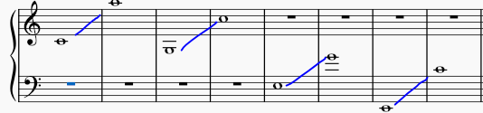

Αρμονία ονομάζεται το σύνολο των κανόνων που κααθορίζουν τη δομή και τη λειτουργία συγχορδιών στην πολυφωνική μουσική. Ξεχωρίζει από τα άλλα στυλ ή είδη μουσικής αντίληψης για την ιδιαίτερη σχέση της με τισ συγχορδίες. Ετσι, ενώ σε άλλα είδη μουσικής αντίληψης ο σχηματισμός συγχορδιών είναι το αποτέλεσμα, στην αρμονία οι συγχορδίες προϋπάρχουν, είναι δομένες, δεν τίθεται θέμα σχηματισμού τους, και αποτελούν προϋπόθεση για τον σχηματισμό σχέσεων μεταξύ τους.
Αν και διδάσκεται ξεχωριστά για καθαρά λόγους παιδαγωγικής πρακτικής από τα άλλα είδη μουσικής γραφής(αντίστιξη ή φούγκα), πρόκειται τελικά για ταυτόσημα είδα, από τη στιγμή που σε όλα επιζητούμε τα ίδια ιδεώδη(πολυφωνική σύνθεση και γενικά διδασκαλία σύθεσης) : επεξεργαζόμαστε το ίσιο υλικό, με την μόνε διαφορά ότι ξεκινά κανείς από εντελώς αντίθετες αφετηρίες.
Στην πρακτική εφαρμογή της Αρμονίας, ιο συγχωρδίες τοποθετουνται σε μια μικτή χορωδία 4ων φωνών : 2 γυναικείες(σοπράνο κα άλτο) και 2 ανδρικές(τενόρο και μπάσο)
Η έκταση αυτών των γωνών είναι η ακόλουθη :
